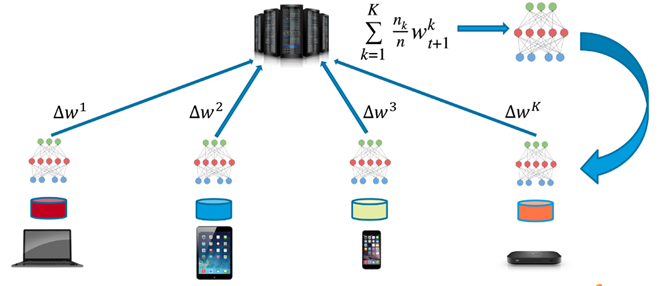

Federated learning is a machine learning setting where multiple entities (clients) collaborate in solving a machine learning problem, under the coordination of a central server or service provider. Each client's raw data is stored locally and not exchanged or transferred; instead, focused updates intended for immediate aggregation are used to achieve the learning objective. [1]
Let's understand Federated Machine Learning from Google. Please watch the video below.
Why we need Federated Machine Learning?
Now, let us understand, why Federated Machine Learning is important.
Privacy Preservation: In an age where data privacy is of utmost importance—consider health records, financial information, and personal communications—federated machine learning allows models to be trained across decentralized devices without the data ever leaving its origin. For instance, your phone can enhance a predictive keyboard model without the need to upload your messages.
Regulatory Compliance: Regulations such as GDPR and HIPAA impose restrictions on data sharing. Federated learning navigates these challenges by processing data locally, thereby simplifying compliance with these laws.
Reduction in Network Overhead: Rather than transferring vast amounts of data to the cloud, federated machine learning transmits only model updates. This is particularly important for devices with limited connectivity or in situations where real-time responses are critical.
Scalability: With billions of devices in use, federated machine learning efficiently taps into this collective computing power, transforming phones and edge devices into a part of a distributed training system.
Reduces Storage Issues: In federated machine learning, the data is stored locally, reducing the challenges associated with centralised data servers. However, it suffers from difficulties like I/O throughput and low latency for real-time applications.
Security Mitigation: Centralized systems are prone to security attacks and breaches as they are the single point of failure. Federated machine learning decentralizes the data, making it harder for adversaries to compromise the entire system easily. However, it opens up avenues for new attacks.
How does Federate Machine Learning Work?

Figure 10.5: A Typical Federated Machine Learning Architecture.
A typical federated machine learning operates through a series of definitive steps. They are:
A central orchestrator distributes a unified model to all data holders.
Individual models are trained on various decentralized edge devices using local datasets, without exchanging the data.
The local model parameters are then sent back to the central orchestrator without sharing any data.
The central orchestrator aggregates these model parameters.
Subsequently, the central orchestrator distributes the updated model parameters back to the edge devices.
This process is repeated until the model reaches convergence.
References
Kairouz, P., McMahan, H.B., Avent, B., Bellet, A., Bennis, M., Bhagoji, A.N., Bonawitz, K., Charles, Z., Cormode, G., Cummings, R. and D’Oliveira, R.G., 2021. Advances and open problems in federated learning. Foundations and trends® in machine learning, 14(1–2), pp.1-210.